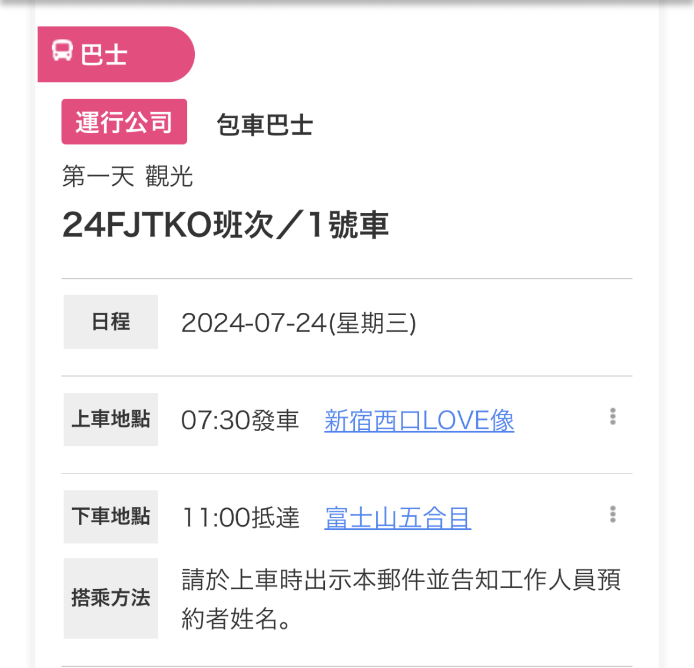
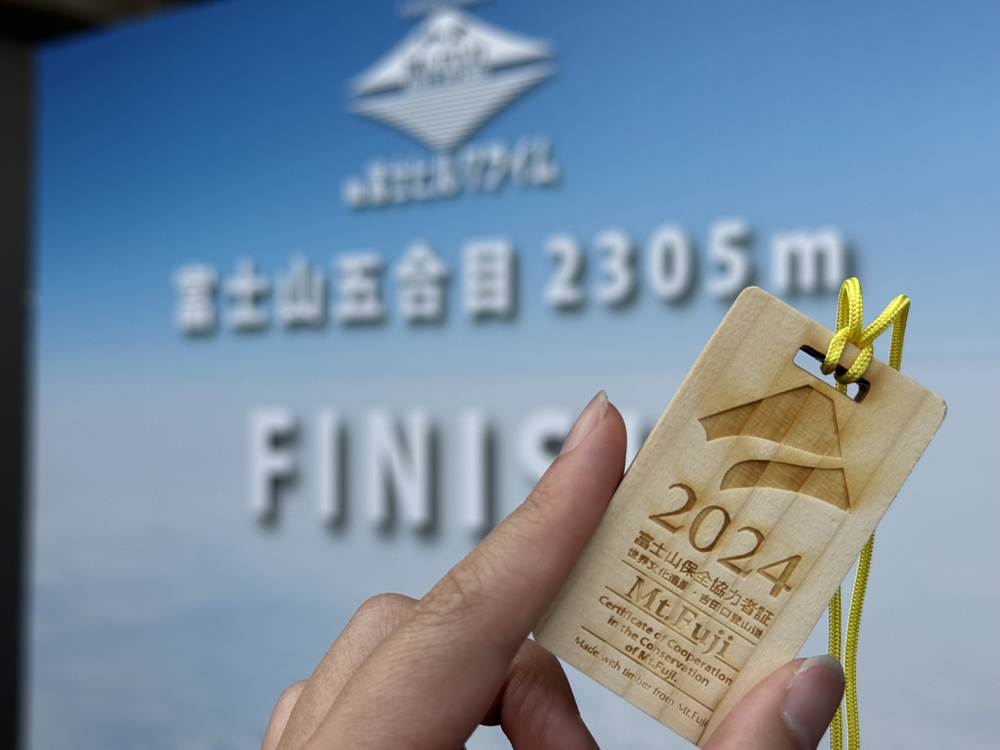
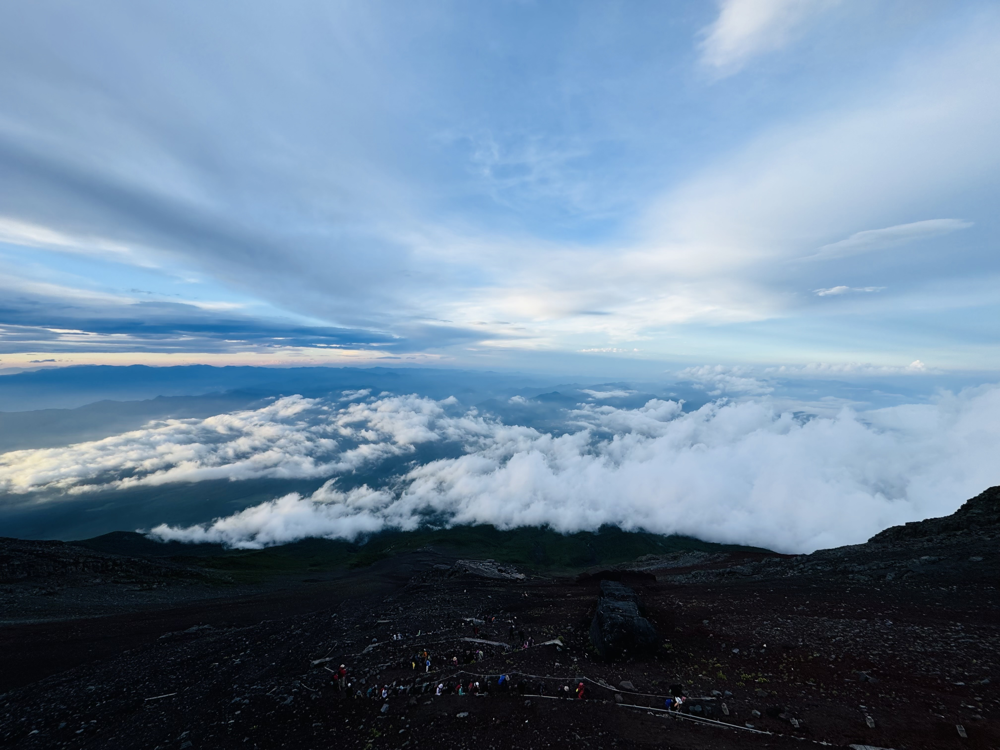
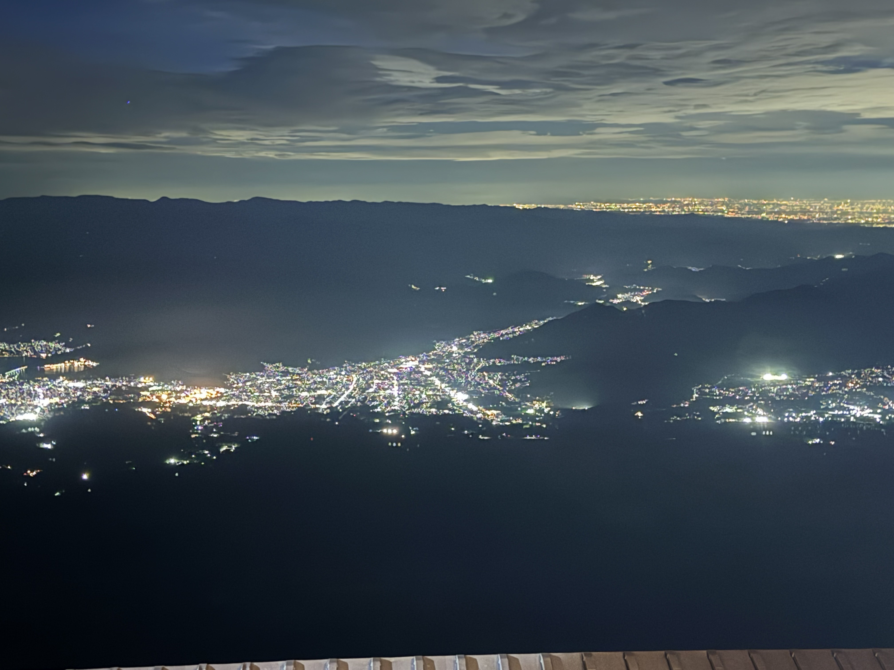

富士山每年七月上旬至九月上旬，山頂融雪、氣候相較穩定，官方開放登山。因為登山經驗不多，需要有嚮導帶領上山、安排中途休息，再加上怕搶不到山屋，所以預計參加套裝行程。經過一段時間的資料蒐集，下訂了有十年以上帶富士山登山團經歷的WILLER TRAVEL（東京出發—吉田路線）。
7/23 20:30
從成田機場搭車前往日暮里轉JR到新宿，為明天出發的富士山之旅準備。
 |
7/23 22:50
到7-11購買晚餐、隔天的早餐以及未來兩天要在山上吃的小零食，選購能量棒、鹽份補給的果凍、營養補給的果凍與礦泉水。想像山頂的風景，如詩如畫，又怕自己體力不足，無法順利完登，前一晚帶著既期待又怕受傷害的心情入睡。
 |
7/24 7:30
根據事前通知，7:20前抵達指定集合地點，前往富士山的途中會停靠裝備出租店。
 |
7/24 11:00
到達五合目後會有一個小時的時間讓大家上廁所、整頓裝備、跟嚮導會合，WILLER會發小鯉魚旗讓大家固定在登山包上，用於辨識同一個群體，以及攻頂前需佩戴的安全帽。入山前，為富士山的環境盡一份心力，繳交富士山保全合作金1,000円，得到富士山保全協力者証（此制度於2025年修改）。
 |
7/24 12:30
五合目到六合目，路線平坦好走，讓大家暖身，嚮導會適時停留、休息，這時可以看看山下的風景、拍拍照片，照片裡都是我們的團員，一團配有三位嚮導，一位領隊；兩位壓隊，使用英日雙語，所以團裡有來自世界各地的登山者。
 |
7/24 14:00
六合目到七合目，坡度較陡的之字形碎石路，海拔提升，空氣逐漸稀薄，留意呼吸的節奏與上行的步伐，嚮導建議盡量步距盡量縮小，不要一次跨一大步，以固定的速度慢慢前進，並示範應該要怎麼走及如何挑選下一步要踩的石頭。這個高度還能看到綠色的植被，趁休息喝水的時候拍照留念。
 |
7/24 16:00
七合目到八合目，地形變成陡峭的岩石路，這段路線最長，需要花費最多的時間，也消耗最多的體力，今天的山屋是八合目的トモエ館，每一次都期待走到頂會是山屋，映入眼前的卻是下一段綿延的岩石路。海拔約2,700-3,000公尺，植物越高越稀少，多為裸露岩屑。
 |
不知不覺，已經來到比雲還高的地方，回頭看，都是我來時的路。
 |
7/24 19:00
費盡千辛萬苦，終於抵達今晚入住的トモエ館，山屋有三種房型供選擇：大通鋪、雙人單間、三人單間，我跟朋友是選擇雙人單間，布置為上下舖雙人床（附床簾），較有隱私，我們被分配到上舖的位置，這時候還要爬上上鋪，真的是對腳底的折磨。
山屋提供的晚餐是漢堡排咖哩飯，這時候能吃到熱騰騰的食物，每一口都覺得好幸福，每一口都格外珍惜。
 |
山屋的廁所設置在外面，睡前出來走走，在氣溫接近零度的夜晚，拍下這輩子可能只會看這一次的夜景。
 |
7/25 04:00
清晨四點整裝出發。04:47今日份御來光，看著太陽緩慢從地平線上升起，除了感動，也覺得未來都受到祝福。經過日本最高的鳥居，就表示快要等頂了！爬大山，看大景，映入眼前的景色，讓路途中的辛苦都變得值得。
 |
因為想把時間留給久須志神社，故無法お鉢巡り（約1.5小時），希望未來能有機會再上來繞行火山口。
 |
行程中，團員有人陸續放棄，選擇下山，一起爬到山頂的我們，在火山口合照，紀念一路上堅持前行，沒有半途而廢，我們好棒！
 |
7/25 07:30 下山
下山前跟兩位嚮導合照，其中一位下午還要帶新的團，已經光速下山，來不及合照。感謝他們一路上瞻前顧後，適時詢問身體狀況，體力是否還能負荷，也會給予心理支持，鼓勵我們：再努力一下，真的快到了。因為有他們的相伴，才能順利完成登頂。山頂有提供QR code掃描，能下載電子版的登頂證明。
 |
如果有人問我上山跟下山哪條路比較辛苦，我肯定選「下山」。下山的路是之字形下坡配上超滑的小石子，除了要預防砂石跑進鞋子，還要注意口鼻的遮掩，路上不少人滑倒，需要更留意腳下的情況，易滑的地面對腳底是不小的負擔，邊滑邊走會比步行省力。
 |
順利在回程的巴士發車前回到五合目，跟同行的夥伴們拍了紀念照，恭喜我們順利上山、平安下山，兩天一夜的旅程，沒有降雨、氣溫宜人，山上的視野良好，眺望遠方讓我心曠神怡，我想這就是爬山的魅力吧！
 |